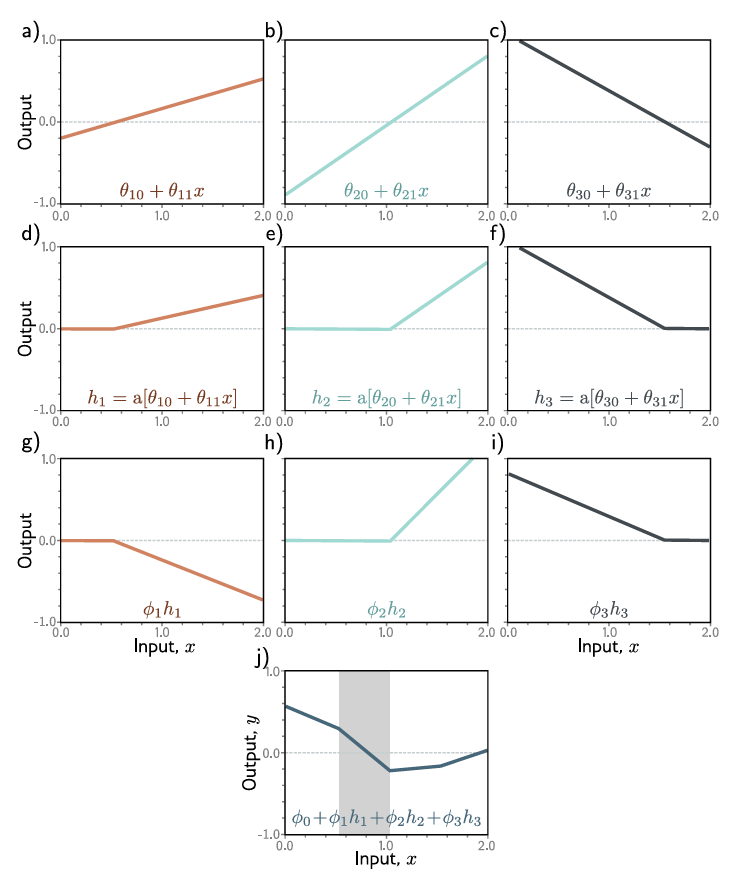
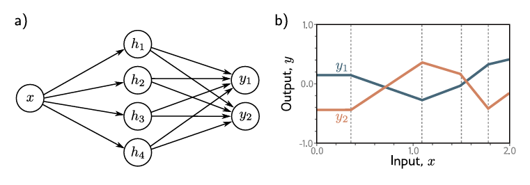
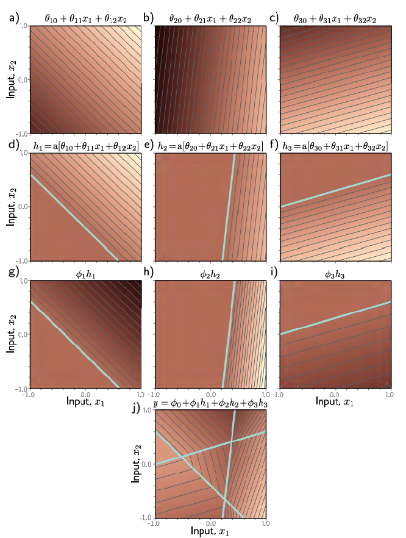

C3.Shallow Neural Network
1.浅层网络映射过程
1.1.$\mathbb{R}^1 \rightarrow \mathbb{R}^1$
当x为1维，y为1维，隐藏层的节点数决定了x-y图像分段数量的上限
符号 第一步线性映射的权值为$\theta$，隐藏层激活函数为$a$，第二步映射（输出层）的权值为$\phi$，输出层激活函数为恒等函数

prop 当隐藏层数量为$n$，对于一维的$x$映射到一维的$y$，最多有$n+1$个分段，其中只有$n$个分段是独立的，剩下一个分段要么恒等于0，要么是其他三个分段的线性组合
1.2.$\mathbb{R}^1 \rightarrow \mathbb{R}^2$
可以理解为映射到多个函数，但函数的关节处相同

若是将$(y_1,y_2)$视为向量，则也可以理解为将一维坐标轴$x$映射为二维平面上的某条折线$l$
1.3.$\mathbb{R}^2 \rightarrow \mathbb{R}^1$
先把隐藏层的所有$\mathbb{R}^2 \rightarrow \mathbb{R}^1$画出来，再做线性叠加

最后得到了七段平面($\mathbb{R}^2 \rightarrow \mathbb{R}^1$)
1.4.总结
总之，对于隐藏层$\mathbb{R}^n \rightarrow \mathbb{R}^m$的理解，画出所有$\mathbb{R}^n \rightarrow \mathbb{R}^1$的函数图像；再根据节点数$m$做线性叠加，得到就是输出层的一个维度的图像了。
隐藏层的数量决定了分段数量的上限，输入层的维度决定了映射图像的维度。
2.浅层网络性质
prop 当隐藏层节点数等于输入层节点数，设输入层节点数为$D$，则最大分段数量为$2^D$
prop(Zaslavsky) 当空间维度为n，使用m个n-1维超平面，最多可以将n维空间划分的数量为$\sum_{i=0}^n C_m^i$
prop ReLU激活函数将输入层的维度空间分段为凸多面体区域
Thm (Universal approximation theorem) there exists a network with one hidden layer containing a finite number of hidden units that can approximate any specified continuous function on a compact subset of $\mathbb{R}^n$ to arbitrary accuracy.
§.Problems
Problem3.1
当$a[x]=\psi_0x+\psi_1$
实际上，带入后$\psi_0\theta_{10}+\psi_0\theta_{11}x+\psi_1$和带入前$\theta_{10}+\theta_{11}x$本质上是一样的，都是线性变换
当$a[x]=x$时同理
Problem3.2
对于图3.3(j)中从左到右的区域{Ⅰ,Ⅱ,Ⅲ,Ⅳ}由三个隐藏层的输出决定{1,2,3}
Ⅰ=3
Ⅱ=1+3
Ⅲ=1+2+3
Ⅳ=1+2
Problem3.3
节点位置：
分段函数表示：
Problem3.5
prove the non-negative homogeneity property of the ReLU function
$\blacksquare$
Problem3.9
trivial by Problem3.2
Problem3.11
$\textcolor{red}{Wrong\ Answer}$ 注意，bias的数量看输出的数量，答案应该是
Problem3.15
trivial 8